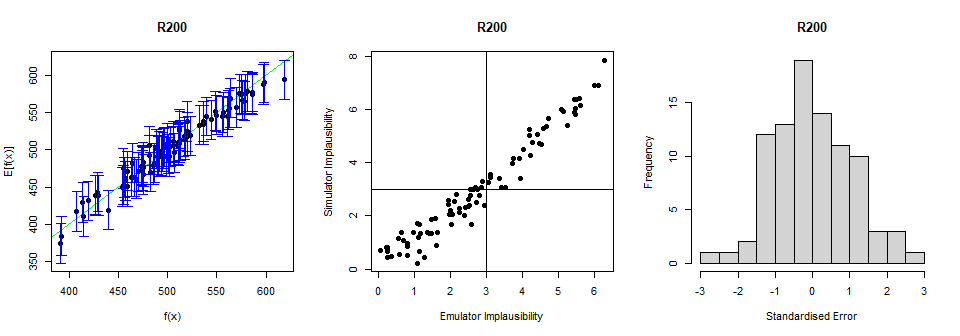
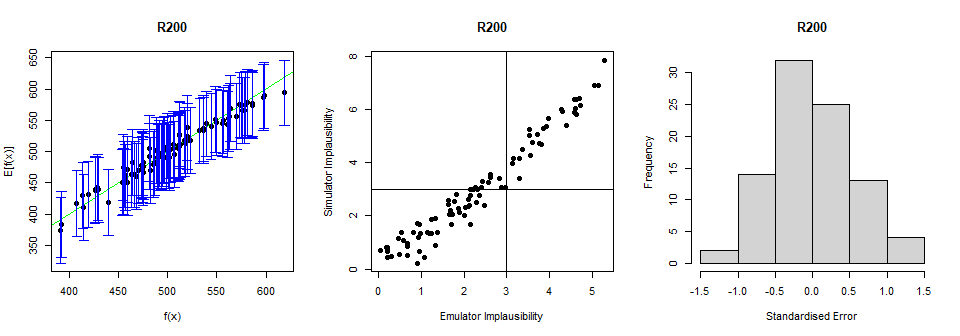

6 Emulator diagnostics
In this section we explore various diagnostic tests to evaluate the performance of the emulators and we learn how to address emulators that fail one or more of these diagnostics.
For a given set of emulators, we want to assess how accurately they reflect the model outputs over the input space. For a given validation set, we can ask the following questions:
Within uncertainties, does the emulator output accurately represent the equivalent model output?
Does the emulator adequately classify parameter sets as implausible or non-implausible?
What are the standardised errors of the emulator outputs in light of the model outputs?
The function validation_diagnostics provides us with three diagnostics, addressing the three questions above.
vd <- validation_diagnostics(ems_wave1$R200, validation = validation, targets = targets, plt=TRUE)
The first plot shows the emulator outputs plotted against the model outputs. In particular, the emulator expectation is plotted against the model output for each validation point, providing the dots in the graph. The emulator uncertainty at each validation point is shown in the form of a vertical interval that goes from \(3\sigma\) below to \(3\sigma\) above the emulator expectation, where \(\sigma\) is the emulator variance at the considered point. The uncertainty interval can be expressed by the formula: \(E[f(x)]\pm 3 \sqrt{Var(f(x)}\). An ‘ideal’ emulator would exactly reproduce the model results: this behaviour is represented by the green line \(f(x)=E[f(x)]\) (this is a diagonal line, visible here only in the bottom left and top right corners). Any parameter set whose emulated prediction lies more than \(3\sigma\) away from the model output is highlighted in red. Note that we do not need to have no red points for the test to be passed: since we are plotting \(3\sigma\) bounds, statistically speaking it is ok to have up to \(5\%\) of validation points in red (see Pukelsheim’s \(3\sigma\) rule). Apart from the number of points failing the diagnostic, it is also worth looking at whether the points that fail the diagnostic do so systematically. For example: are they all overestimates/underestimates of the model output?
The second column compares the emulator implausibility to the equivalent model implausibility (i.e. the implausibility calculated replacing the emulator output with the model output). There are three cases to consider:
The emulator and model both classify a set as implausible or non-implausible (bottom-left and top-right quadrants). This is fine. Both are giving the same classification for the parameter set.
The emulator classifies a set as non-implausible, while the model rules it out (top-left quadrant): this is also fine. The emulator should not be expected to shrink the parameter space as much as the model does, at least not on a single wave. Parameter sets classified in this way will survive this wave, but may be removed on subsequent waves as the emulators grow more accurate on a reduced parameter space.
The emulator rules out a set, but the model does not (bottom-right quadrant): these are the problem sets, suggesting that the emulator is ruling out parts of the parameter space that it should not be ruling out.
As for the first test, we should be alarmed only if we spot a systematic problem, with \(5\%\) or more of the points in the bottom-right quadrant. Note, however, that it is always up to the user to decide how serious a misclassification is. For instance, a possible check is to identify points that are incorrectly ruled out by one emulator, and see if they would be considered non-implausible by all other emulators. If they are, then we should think about changing the misclassifying emulator.
Finally, the third column gives the standardised errors of the emulator outputs in light of the model output: for each validation point, the difference between the emulator output and the model output is calculated, and then divided by the standard deviation \(\sigma\) of the emulator at the point. The general rule is that we want our standardised errors to be somewhat normally distributed around \(0\), with \(95\%\) of the probability mass between \(-2\) and \(2\). When looking at the standard errors plot, we should ask ourselves at least the following questions:
Is more than \(5\%\) of the probability mass outside the interval \([-2,2]\)? If the answer is yes, this means that, even factoring in all the uncertainties in the emulator and in the observed data, the emulator output is too often far from the model output.
Is \(95\%\) of the probability mass concentrated in a considerably smaller interval than \([-2,2]\) (say, for example, \([-0.5,0.5]\))? For this to happen, the emulator uncertainty must be quite large. In such case the emulator, being extremely cautious, will cut out a small part of the parameter space and we will end up needing many more waves of history matching than are necessary, or, even worse, we just won’t be able to reduce the non-implausible parameter space.
Is the histogram skewing significantly in one direction or the other? If this is the case, the emulator tends to either overestimate or underestimate the model output.
The first two diagnostics above are clearly passed. In the third diagnostic if we consider all standardised errors below \(-2\) and above \(2\), we get slightly more than \(5\%\) of all errors: this is not particularly bad, but in order to be safe we will try to modify our emulator to make it more conservative.
A way of improving the performance of an emulator is by changing the variance \(\sigma^2\) in the Gaussian process \(u\):
\[\sigma^2 \left[(1-\delta) c(x,x^{\prime}) + \delta I_{\{x=x^\prime\}}\right].\]
The lower the value of \(\sigma\), the more ‘certain’ the emulator will be. This means that when an emulator is a little too overconfident (as in our case above), we can try increasing \(\sigma\). Below we train a new emulator setting \(\sigma\) to be 2 times as much as its default value, through the method mult_sigma:
sigmadoubled_emulator <- ems_wave1$R200$mult_sigma(2)
vd <- validation_diagnostics(sigmadoubled_emulator,
validation = validation, targets = targets, plt=TRUE)
A higher value of \(\sigma\) has therefore allowed us to build a more conservative emulator that performs better than before.
Explore different values of \(\sigma\). What happens for very small/large values of \(\sigma\)?